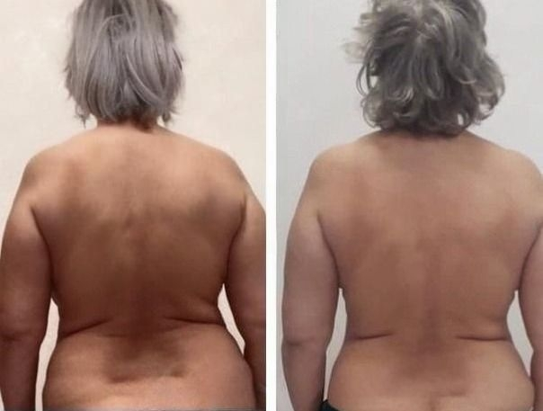
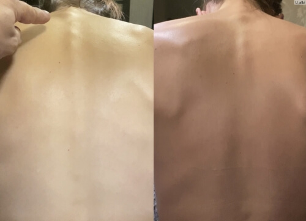

La Sibiu trăiește un om care contrazice tot ce credem despre bătrânețe. La 101 ani, prof. Teofil Roșca coboară singur cele patru etaje, își face piața și, cum spune el, „nu s-a împrumutat niciodată de la un baston".
Până anul trecut, prof. Roșca primea pacienți în cabinetul de ortopedie al Spitalului Clinic Județean Sibiu. Veneau la el oameni din toată țara — mulți după ce li se spusese, în alte părți, că singura variantă rămasă e proteza.
Dar adevărata enigmă nu sunt pacienții lui. Adevărata enigmă este chiar el. La 101 ani — nici artroză, nici hernie, nici cocoașă. Radiografiile lui, spun colegii, arată ca ale unui bărbat de cincizeci și ceva.
Zeci de ani și-a ținut metoda pentru el — o folosea numai la pacienții din cabinet și n-a publicat-o niciodată. Astăzi, pentru prima dată, acceptă să spună pe ce se sprijină.

Prof. Teofil Roșca: „Toată viața am văzut oameni care îmbătrânesc înainte de vreme — nu fiindcă trupul lor ar fi obosit, ci fiindcă nimeni nu i-a învățat ce să facă. Adevărul e simplu și incomod: articulațiile pot rămâne sănătoase până la adânci bătrâneți, dacă știi cum să trezești celulele care le refac.
SCOPUL MEU A FOST ÎNTOTDEAUNA UNUL SINGUR — SĂ AJUT TRUPUL SĂ FACĂ SINGUR CARTILAJ ȘI OS NOU, AȘA CUM FĂCEA LA TINEREȚE. ȘI SĂ LAS ÎN URMĂ CEVA CARE SĂ AJUNGĂ ÎN FIECARE CASĂ DIN ROMÂNIA."
Dr. Vlad Roșca — fiul profesorului — a terminat Universitatea de Medicină și Farmacie „Iuliu Hațieganu" din Cluj și a lucrat ani buni în cercetare farmaceutică. El a fost cel care a insistat ca metoda tatălui să iasă din cabinet.
Rezultatul acestei colaborări a depășit tot ce sperau amândoi. Dar înainte să vă povestim despre produs, ascultați ce spune profesorul despre ceea ce ia astăzi aproape toată România.
Minciuna în care crede toată România:
„Antialgicele tratează articulațiile" — FALS, ele le distrug și mai repede!
Prof. Teofil Roșca:
— Șaptezeci de ani tratez oameni și vă spun ceva ce farmaciile n-o să recunoască niciodată: nicio pastilă contra durerii nu reface nimic. Ele sting semnalul, atât. Iar dumneavoastră, nemaisimțind durerea, folosiți articulația mai departe — și ea se macină mai repede.
Dar nici asta nu e cel mai rău. Cel mai rău e ce fac substanțele astea organelor interne. După ani de antiinflamatoare vin ulcerul, ficatul încărcat, rinichii obosiți. Am văzut oameni care și-au salvat genunchiul și și-au pierdut stomacul.
Coloana e cea mai expusă. Discurile intervertebrale nu au vase de sânge proprii — se hrănesc prin difuzie, din țesutul din jur. Când procesul ăsta se oprește, discul se usucă. Iar un disc uscat nu se mai umflă la loc de la sine.
Uitați-vă la radiografia asta. O femeie de doar 38 de ani, învățătoare — iar coloana ei arată ca a unei femei de șaptezeci.

Dacă simțiți durere, înțepeneală sau pocnituri în articulații după 40 de ani — cartilajul dumneavoastră se subțiază deja. Procesul e tăcut și nu se oprește singur.
La coloană totul merge de câteva ori mai repede și mai pe ascuns — durerea apare abia când distrugerea a avansat serios.
Prof. Teofil Roșca:
— Vreau să fiu cât se poate de direct. Știu oameni care au amânat luni de zile. Rezultatul? Un nerv strivit, care nu se mai întoarce la starea de dinainte. Ăsta e pragul de care mă tem cel mai tare. DISCUL POATE FI REFĂCUT, DAR NERVUL — NU! Și ce rămâne atunci? BASTON, SCAUN CU ROTILE ȘI DEPENDENȚĂ DE ALȚII PÂNĂ LA CAPĂT!
Iar ce propune chirurgia de azi? Operații scumpe și riscante, cu implanturi metalice. Am văzut cu ochii mei destule ca să nu le recomand cu inima ușoară. INFECȚII, CONSOLIDĂRI RATATE, DURERE CRONICĂ ȘI, PÂNĂ LA URMĂ — O A DOUA OPERAȚIE. IAR UNEORI — LEZIUNI DEFINITIVE.
 Prof. Roșca arată radiografia unui pacient operat cu șuruburi metalice: „Ăsta e rezultatul la un an și jumătate. Omul a venit la mine ca la ultima ușă."
Prof. Roșca arată radiografia unui pacient operat cu șuruburi metalice: „Ăsta e rezultatul la un an și jumătate. Omul a venit la mine ca la ultima ușă."
Cifrele nu iartă: la 60% dintre cei operați, hernia revine în 2-4 ani. Iar prețul? Luni de imobilizare și o factură pe care puțini o duc.
Semnele astea înseamnă că cartilajul dumneavoastră deja moare! Iar dacă aveți peste 40-50 de ani — procesul e în plină desfășurare.
— În 70 de ani de practică am consultat peste 40.000 de oameni și pot spune un lucru: fiecare durere are o cauză, iar cauza are un început. Cine prinde începutul, scapă ieftin. în România s-au înregistrat peste 125.000 de cazuri noi de afecțiuni articulare grave — dintre care multe la oameni sub 50 de ani.
Dacă trupul v-a dat deja vreunul dintre semnalele astea — nu mai așteptați nicio zi!
Iată lista pe care o dădeam fiecărui pacient la prima consultație:
- Înțepeneală de dimineață care nu trece nici după ce te miști;
- Scrâșnete, pocnituri sau trosnete la mișcare;
- Durere care se întețește când se schimbă vremea;
- Greutate la îndoirea sau întinderea genunchilor;
- Umflătură, roșeață sau căldură în jurul articulației;
- Durere la urcatul sau coborâtul scărilor;
- Oboseală cronică și picioare grele;
- Dureri de șale care „împușcă" spre coapsă sau spre talpă;
- Amorțeli sau furnicături în degete;
- Mers schimbat — șchiopătat, nesiguranță;
- Imposibilitatea de a sta în picioare mai mult de 10-15 minute;
Dacă vă regăsiți fie și în două dintre ele — cartilajul dumneavoastră se distruge deja. URMAREA: HERNIE, NERV STRIVIT, VERTEBRE DEFORMATE, PIERDEREA MOBILITĂȚII — ȘI TOATE ASTEA SE ÎNTÂMPLĂ MAI REPEDE DECÂT CREDEȚI. Nu amânați, fiindcă trupul nu vă dă șanse la nesfârșit!
Uitați-vă la oamenii de mai jos. Fiecare a avut exact semnele pe care poate le aveți și dumneavoastră astăzi.


Prof. Teofil Roșca:
Am 101 ani și vă spun din experiență proprie: trupul se poate reface la ORICE vârstă. Nu e vorba de noroc, e vorba de a-i da ce-i trebuie și de a nu-l mai otrăvi. IAR DACĂ AVEȚI DEJA PESTE 50-60 DE ANI, NU MAI AȘTEPTAȚI NICIO CLIPĂ! La dumneavoastră distrugerea a intrat aproape sigur în faza critică — trebuie oprită acum, nu la anul.
Cazuri pe care alți medici le declaraseră fără speranță! Elisabeta Munteanu a mers din nou singură la 84 de ani, după ce trei spitale o refuzaseră. Iată povestea ei.
Elisabeta Munteanu din Deva avea artroză severă la genunchi și mai multe hernii de disc. Trei spitale i-au spus același lucru: la vârsta ei nu se mai operează, să se împace cu gândul.

„Trăiam ca într-o închisoare — casa mea devenise celulă. Nu ajungeam la baie, nu puteam sta în picioare cât să-mi fac un ceai. Fata mea venea să mă spele. La 84 de ani, asta a fost partea cea mai grea — nu durerea, ci rușinea."
Când fata mea m-a dus la prof. Roșca, s-a uitat la mine și mi-a spus ceva ce nu-mi spusese niciun medic: „Doamnă Elisabeta, trupul dumitale n-a renunțat. Numai dumneata ai renunțat."
Astăzi, la cinci luni distanță, merg la magazin, gătesc și îngrijesc stratul de flori din fața blocului. La 84 de ani. Fără cadru, fără baston.
Elisabeta Munteanu, 84 de ani, DevaUn alt caz care nu se uită e Marius Dobrescu — sudor de 49 de ani din Galați, care după 20 de ani de lucru greu a ajuns în scaun cu rotile.
Marius a încercat metoda prof. Roșca, iar rezultatele l-au uimit și pe medicul lui curant. COLOANA A ÎNCEPUT SĂ SE REFACĂ, DUREREA A DISPĂRUT COMPLET, IAR CEL MAI GREU DE CREZUT LUCRU: A LĂSAT SCAUNUL CU ROTILE DUPĂ NUMAI 4 SĂPTĂMÂNI!
Marius ne-a povestit:
 „Douăzeci de ani am sudat structuri, dar de spatele meu n-a avut cine să aibă grijă. Într-o dimineață m-am trezit și pur și simplu n-am mai putut să mă ridic din pat. Aveam 47 de ani."
„Douăzeci de ani am sudat structuri, dar de spatele meu n-a avut cine să aibă grijă. Într-o dimineață m-am trezit și pur și simplu n-am mai putut să mă ridic din pat. Aveam 47 de ani."
Luni întregi am stat acasă, în scaun. Copiii se uitau la mine cu milă, nevastă-mea plângea seara în bucătărie ca să n-o aud. Ăsta e felul de om în care te transformi când nu mai poți munci."
Atunci socrul meu a auzit de prof. Roșca de la un fost pacient de-al lui. Am sunat, am trimis radiografiile, iar peste o săptămână aveam primul plan de tratament.
În a patra zi puteam deja să stau în picioare. Cura completă a durat 80 de zile. Astăzi lucrez din nou — nu la fel de greu, dar lucrez. Și dorm noaptea."
Poveștile miilor de pacienți ai prof. Roșca sună la fel: oameni cărora alți medici le spuseseră că nu mai e nimic de făcut.
Formula pe care prof. Roșca a folosit-o la pacienții lui timp de peste 40 de ani! Secretul metodei „Reactivării Celulare Proprii" — cum trupul începe singur să facă cartilaj nou, la orice vârstă
Prof. Teofil Roșca:
— Dați-mi voie să vă explic ceva ce medicina obișnuită nu prea vrea să audă. Trupul fiecărui om păstrează celulele care refac cartilajul și osul. Ele nu mor odată cu anii — adorm.
Acum patruzeci de ani am observat că o anumită combinație de substanțe naturale — în proporții foarte precise — le trezește. Am numit-o simplu: „Reactivarea Celulară Proprie" — fiindcă nu bagi nimic artificial în om, ci pornești ce are el deja. Tocmai de asta lucrează și la optzeci, și la nouăzeci de ani.
Patru decenii am folosit metoda la fiecare pacient al meu — și la fiecare am văzut aceeași succesiune de patru etape.
Formula în sine nu e complicată — dar precizia e totul. Fiecare component trebuie să fie în cantitatea exactă, altfel nu se întâmplă nimic.
Compoziția capsulelor după formula prof. Roșca (substanțe active pe doză zilnică):
- Omega-3 semințe de in: 4500 mg
- Glucozamină sulfat crustacee: 1100 mg
- Citrat de magneziu alge marine: 390 mg
- Gingerol ghimbir: extract 4200 mg
- AKBA rășină de tămâie (Boswellia): extract 1100 mg
- Siliciu coada-calului: extract 320 mg
- Curcumină turmeric: extract 2300 mg
Ingredientele par simple, dar găsirea lor la calitatea potrivită și din sursa potrivită e partea grea.
Tocmai de aceea zeci de ani am făcut formula personal, pentru fiecare pacient în parte. Dar fiul meu Vlad mi-a spus ceva la care n-am avut ce să răspund: câți oameni pot trece printr-un singur cabinet?
Cum a transformat dr. Vlad Roșca metoda de 40 de ani a tatălui său în capsule la îndemâna oricui
Dr. Vlad Roșca:
— Am crescut în cabinetul tatei. În fiecare zi vedeam oameni care intrau încovoiați de durere — și ieșeau altfel. Am vrut ca asta să nu se termine odată cu el.
Am petrecut cinci ani în laboratoare din Cluj și din Viena ca să înțeleg DE CE formula tatei funcționează — și cum poate fi închisă într-o capsulă fără să-și piardă puterea.
Am pus la punct o tehnologie pe care am numit-o „Microîncapsulare cu Absorbție Dirijată" — substanțele active sunt învelite într-un strat care trece nevătămat prin stomac și se desface abia acolo unde trebuie. Jointerra — capsule care se iau pe gură și lucrează exact acolo unde e nevoie.

Capsulele Jointerra conțin toate cele 7 componente din formula originală a tatălui meu, plus 29 de extracte care ajută absorbția.
„Jointerra e moștenirea tatălui meu — patruzeci de ani de experiență, închiși într-o formulă. Fiecare ingredient e acolo dintr-un motiv."
Lucrul cel mai important la Jointerra e că nu doar potolește durerea — pornește mecanismul de refacere al trupului.
Cele patru faze ale refacerii cu Jointerra — ce se întâmplă în trupul dumneavoastră, pas cu pas
Prof. Teofil Roșca:
— De-a lungul întregii mele vieți de medic am văzut cum pacienții trec prin aceleași patru faze. Iată-le.
Cele 4 faze ale „Reactivării Celulare Proprii":
- Faza 1 — Oprirea durerii și a inflamației: Încă de la primele capsule, substanțele active ajung prin sânge la articulația afectată și opresc inflamația chiar de la sursă — nu doar semnalul de durere.
- Faza 2 — Oprirea distrugerii: Între ziua a 3-a și a 7-a, trupul încetează să mai degradeze țesutul cartilaginos și osos. Crește producția substanțelor care țin articulația hrănită.
- Faza 3 — Trezirea celulelor care refac: Aici e inima metodei. Condrocitele și osteoblastele „adormite" primesc semnalul și încep iar să producă țesut nou. De aici încolo, trupul lucrează singur.
- Faza 4 — Un strat de protecție care ține: După 30-60 de zile, țesuturile nou formate fac un strat de protecție care ține articulația fermă luni întregi după terminarea curei.
Fiecare fază e rezultatul a 40 de ani de practică și a 5 ani de laborator.
Rezultate care au surprins lumea medicală — teste pe 2.340 de pacienți cu vârste între 38 și 89 de ani
Dr. Vlad Roșca:
— Când am publicat primele rezultate de laborator, reacția a venit imediat. Clinici universitare ne-au cerut datele complete.
Pacienți programați pentru proteză și-au anulat operațiile. Oameni care nu se mai ridicau singuri au început să meargă.
Rezultatele studiilor clinice „Jointerra" la 2.340 de pacienți cu vârste între 38 și 89 de ani
| Dispariția completă a durerii și a inflamației | 100% |
| Revenirea amplitudinii complete de mișcare | 94,7% |
| Tendinită, bursită, periartrită | 96,3% |
| Oprirea și inversarea modificărilor degenerative | 97,8% |
| Sinovită, ligamentită | 98,1% |
| Osteoartrită (toate stadiile) | 87,2% |
| Osteoporoză | 93,6% |
| Artrită reumatoidă, gută | 95,4% |
| Artroză, spondilartrită | 91,8% |
| Refacere documentată a țesutului cartilaginos | 98,3% |
Termene de refacere cu „Jointerra":
Alte echipe din Europa încearcă să reproducă formula, dar deocamdată rezultatele lor rămân în urmă.
Cât durează refacerea completă? Prof. Roșca explică pe baza celor 70 de ani de practică
Prof. Teofil Roșca:
— Cura minimă pe care o recomand e de 30 de zile. La deteriorări mai serioase — 60, uneori 90. Nu e o cursă; e un proces care are ritmul lui.
Jointerra nu oprește doar durerea — pornește o refacere adevărată. Luați capsulele dimineața și seara și lăsați trupul să-și facă treaba. Dar lucrul cel mai de preț e altul: efectul ȚINE. Odată trezite, celulele continuă să lucreze și după ce cura s-a încheiat.
Datorită „Jointerra", peste 19.000 de oameni din România și-au recăpătat mobilitatea. Iată doar câteva cazuri:



Prof. Teofil Roșca:
— Fotografiile astea nu sunt minuni — e știință răbdătoare. Fiecare dintre oamenii ăștia a primit înapoi ceva ce credea pierdut.
De ce prof. Roșca nu mai primește pacienți — și cum a rămas Jointerra singura cale de a ajunge la formula lui „Sănătatea nu-mi mai dă voie să primesc bolnavi. Dar formula mea își va vedea mai departe de treabă — prin fiul meu."
Prof. Teofil Roșca:
— Anul trecut am luat cea mai grea hotărâre din viața mea: să nu mai primesc bolnavi. Lista de așteptare ajunsese la peste un an, iar eu nu mai puteam ține pasul.
Dr. Vlad Roșca: — Jointerra nu se vinde în farmacii — producția e complicată, iar cantitățile sunt mici. De aceea am făcut un program de sprijin, cu o reducere de până la 50% — fiindcă scopul nostru nu e câștigul, ci ca oamenii să ajungă la formulă. Mai ales pensionarii.
Ca să vă înscrieți, folosiți formularul oficial de mai jos — vine direct de la echipa noastră.
Nu ratați ultima ocazie din acest an — Jointerra se poate epuiza înainte de încheierea programului!

Dr. Vlad Roșca:
— Anul acesta am reușit să scoatem doar 5 000 de pachete de capsule Jointerra special pentru oamenii din România. Dar, având în vedere cererea — se termină repede. 2026.
Programul de sprijin este activ până pe — orice locuitor al României de peste 40 de ani poate primi până la 50% reducere. După data asta, va trebui să așteptați cel puțin 6 luni pentru o nouă ocazie.
Nu amânați. Tata le spunea mereu pacienților: „Articulațiile nu vă așteaptă — ele se strică în fiecare zi în care nu faceți nimic."
Scrieți-vă pur și simplu numele și numărul de telefon în formular. Un consultant vă va suna și va stabili cura potrivită.
Vă doresc sănătate! Aveți grijă azi de articulații, ca să mergeți mâine. Cu respect — prof. Teofil Roșca.
Actualizare: : Din cauza cererii foarte mari, stocurile de Jointerra se pot epuiza înainte de finalul programului. — este ultima zi pentru comandă cu reducere sau până la epuizarea stocurilor.

Atenție! Nu închideți și nu reîncărcați pagina — capsulele Jointerra rezervate pentru dumneavoastră vor fi date altcuiva!
Locul dumneavoastră rezervat în program: Nr. 19 974
prin poștă sau curier, direct la ușa dumneavoastră

COMENTARII:
Lucreția Barbu
Așteptam articolul ăsta de luni de zile! O prietenă din Sibiu a fost personal la prof. Roșca acum câțiva ani și de atunci umblă ca la cincizeci de ani. Acum înțeleg în sfârșit pe ce.
Ștefania Cojocaru
Curierul mi le-a adus miercuri. De zece zile iau capsulele dimineața și seara — iar diferența e ENORMĂ. Genunchiul stâng, care mă chinuia de patru ani, nu mai pocnește la scări.

Rodica Marinescu
Am 72 de ani și trei ani am suferit de dureri de șold. Mersul era o pedeapsă. Ortopedul mi-a spus să mă pregătesc de proteză. A doua lună de capsule — merg până la piață și înapoi fără să mă opresc.
Vasile Gheorghiu
Ca fost sportiv, știu ce înseamnă să trăiești cu cartilajul praf. Genunchii mei erau ca ai unui om de 90 de ani, deși am 58. După cură urc scările normal. Nu mi-a venit să cred.
Petronela Iordache
Sunt puțin îngrijorată… merită? Am 66 de ani, îmi pocnesc articulațiile la fiecare mișcare și spatele nu mă mai ține deloc. Mi-e teamă să nu dau banii degeaba, ca la atâtea altele.
Daniel Cristea
Doamnă Petronela, vă înțeleg perfect îndoielile — le-am avut și eu. Dar aici e altceva: nu ascunde durerea, ci lucrează în timp. Mie mi-au trebuit trei săptămâni ca să simt.
Înainte nu mă puteam apleca să-mi leg pantofii. Acum o fac fără să mă gândesc. Comandați măcar un pachet și vedeți singură.
Gabriela Panait
La trei zile după ce am început capsulele, durerea din genunchi mi-a scăzut la jumătate! Acum e a treia săptămână și cobor scările fără să mă țin de balustradă.
Ioana Zlătaru
Pe spate îmi crescuse o „cocoașă" în două luni. M-am îngrozit! Încercasem tot felul de unguente, degeaba. După cură s-a oprit din creștere și am început să stau dreaptă.

Paula Atanasiu
Aveam un nerv strivit în zona lombară — de durere nu puteam nici dormi, nici sta în picioare. Medicul îmi propusese infiltrații. Am ales capsulele. A patra săptămână: dorm toată noaptea.
Chiril Drăgan
Am 79 de ani și de trei ani abia mai mergeam. Băiatul a comandat Jointerra pentru mine — fără să mă întrebe, că știa că refuz. Bine a făcut.
Tiberiu Stoica
Înainte nu puteam ridica brațele deasupra capului — umărul pocnea și durea îngrozitor. Doi ani de fizioterapie n-au făcut nimic. Două luni de capsule și îmi iau singur farfuriile de sus.

Aurelia Ivănescu
Am comandat pentru soacra mea — are 81 de ani și aproape nu se mai ridica din pat. Medicii refuzau orice intervenție la vârsta ei. Acum iese pe hol singură.
Emil Vulcu
Nevastă-mea a stat la pat patru luni — pur și simplu i-a cedat coloana. Doctorii au propus operație de 15.000 de lei, fără garanții. Am încercat întâi asta. Bine că am făcut-o.
Nina Borcea
Am comandat săptămâna trecută, le-am primit a treia zi. Am început imediat — iar ameliorarea a venit mai repede decât credeam. Mă tem să nu-mi fac iluzii, dar deocamdată merge.
Ruxandra Milescu
Am 74 de ani. Cinci ani am suferit de artroză și dureri de coloană. Am încercat literalmente tot — unguente, injecții, băi termale. Asta e primul lucru care a schimbat ceva.

Violeta Penciu
Îl cunosc pe prof. Roșca personal — acum 12 ani m-a tratat pentru hernie de disc. În trei săptămâni eram pe picioare. Omul ăsta merită tot respectul.
Constanța Petrescu
Tata are 84 de ani și de trei ani nu ieșea din casă. Articulațiile, spatele, genunchii — totul îl durea. Ieri a coborât singur la chioșc după ziar. Am plâns.
Mirela Doncea
Știe cineva dacă se poate lua în caz de alergii? Eu reacționez la aproape orice — chiar și de la aspirină fac erupție.
Spiridon Călcescu
Mirela, eu sunt alergic la patru feluri de medicamente. Iau capsulele de 50 de zile — nicio iritație, nimic. Dar întrebați totuși medicul dumneavoastră.
Dorina Sava
Înainte nu aveam putere să mă ridic — fiecare mișcare era un chin și credeam că viața mea s-a terminat. Băiatul a insistat să încerc. A doua lună: îmi fac curat singură.

Svetlana Bratu
Am comandat pentru mama. Avea dureri constante la ceafă, care îi dădeau amețeli și greață — viața ei devenise un chin. Acum coase iar, seara, la lumina lămpii.
Snejana Mincu
Mă întreb — dacă prof. Roșca e atât de bun, de ce nu se vinde peste tot? De ce doar online?
Mihai Raicu
Fiindcă farmaciile câștigă de pe urma oamenilor care cumpără antialgice în fiecare lună! Dacă toți s-ar face bine, cine ar mai cumpăra cutii pe bandă?
Oana Crumeanu
Am citit toate comentariile — și m-am emoționat. Comand acum, pentru mine și pentru soțul meu. Am luat trei pachete, să ajungă pentru cură întreagă.
Florentina Marin
Ortopedul mi-a spus că la 63 de ani trebuie să mă obișnuiesc cu durerea — că nu există leac. Am comandat Jointerra a doua zi. Nu mă obișnuiesc cu nimic.